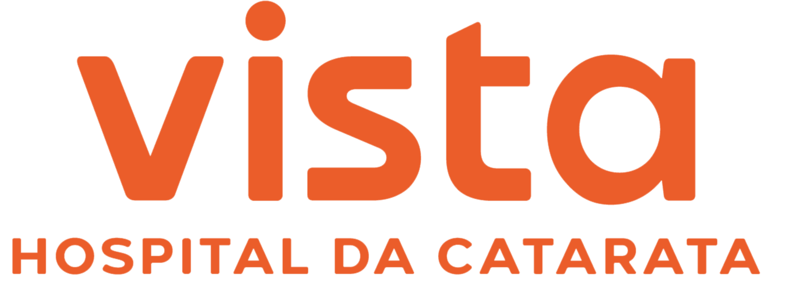

01 — Cirurgia de catarata
A catarata tem cura. E ela é cirúrgica.
A catarata turva a visão aos poucos, e o tratamento é cirúrgico. Aqui, a indicação vem depois de uma avaliação completa — exames, cálculo da lente intraocular e uma conversa sem pressa sobre riscos e alternativas.
- Lentes intraoculares premium
- Cirurgia com facoemulsificação
- {{CRM}} / {{RQE}}